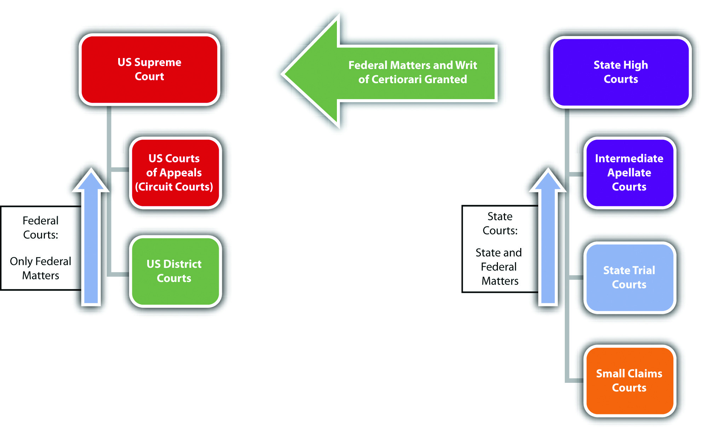

Every state has two court systems: the federal court system, which is the same in all fifty states, and the state court system, which varies slightly in each state. Federal courts are fewer in number than state courts. Because of the Tenth Amendment, discussed earlier in Section 2.1.2 "The Scope of State Law", most laws are state laws and therefore most legal disputes go through the state court system.
Federal courts are exclusive; they adjudicate only federal matters. This means that a case can go through the federal court system only if it is based on a federal statute or the federal Constitution. One exception is called diversity of citizenship.28 U.S.C. § 1332, accessed August 30, 2010, http://www.law.cornell.edu/uscode/28/1332.html. If citizens from different states are involved in a civil lawsuit and the amount in controversy exceeds $75,000, the lawsuit can take place in federal court. All federal criminal prosecutions take place in federal courts.
State courts are nonexclusive; they can adjudicate state or federal matters. Thus an individual who wants to sue civilly for a federal matter has the option of proceeding in state or federal court. In addition, someone involved in a lawsuit based on a federal statute or the federal Constitution can remove a lawsuit filed in state court to federal court.28 U.S.C. § 1441 et. seq., accessed August 30, 2010, http://www.law.cornell.edu/uscode/28/1441.html. All state criminal prosecutions take place in state courts.
Determining which court is appropriate for a particular lawsuit depends on the concept of jurisdictionEither a court’s power to hear a case or a court’s authority over a geographic area.. Jurisdiction has two meanings. A court’s jurisdiction is the power or authority to hear the case in front of it. If a court does not have jurisdiction, it cannot hear the case. Jurisdiction can also be a geographic area over which the court’s authority extends.
There are two prominent types of court jurisdiction. Original jurisdictionA court’s power to hear a trial and accept evidence. means that the court has the power to hear a trial. Usually, only one opportunity exists for a trial, although some actions result in both a criminal and a civil trial, discussed previously in Chapter 1 "Introduction to Criminal Law". During the trial, evidence is presented to a trier of factThe decision maker at trial; could be a judge or jury., which can be either a judge or a jury. The trier of fact determines the facts of a dispute and decides which party prevails at trial by applying the law to those facts. Once the trial has concluded, the next step is an appeal. During an appeal, no evidence is presented; the appellate court simply reviews what took place at trial and determines whether or not any major errors occurred.
The power to hear an appeal is called appellate jurisdictionA court’s power to hear an appeal and review a trial for error.. Courts that have appellate jurisdiction review the trial record for error. The trial record includes a court reporter’s transcript, which is typed notes of the words spoken during the trial and pretrial hearings. In general, with exceptions, appellate courts cannot review a trial record until the trial has ended with a final judgment. Once the appellate court has made its review, it has the ability to take three actions. If it finds no compelling or prejudicial errors, it can affirmAn appellate court’s power to uphold a lower court decision. the judgment of the trial court, which means that the judgment remains the same. If it finds a significant error, it can reverseAn appellate court’s power to change a lower court decision. the judgment of the trial court, which means that the judgment becomes the opposite (the winner loses, the loser wins). It can also remandAn appellate court’s power to send a case back to the trial court, with instructions., which means send the case back to the trial court, with instructions. After remand, the trial court can take action that the appellate court cannot, such as adjust a sentence or order a new trial.
Some courts have only original jurisdiction, but most courts have a little of original and appellate jurisdiction. The US Supreme Court, for example, is primarily an appellate court with appellate jurisdiction. However, it also has original jurisdiction in some cases, as stated in the Constitution, Article III, § 2, clause 2: “In all Cases affecting Ambassadors, other public Ministers and Consuls, and those in which a State shall be Party, the supreme Court shall have original Jurisdiction. In all the other Cases before mentioned, the supreme Court shall have appellate jurisdiction.”
Paulina is prosecuted for the attempted murder of Ariana. Paulina is represented by public defender Pedro. At Paulina’s trial, in spite of Pedro’s objections, the judge rules that Paulina’s polygraph examination results are admissible, but prohibits the admission of certain witness testimony. Paulina is found guilty and appeals, based on the judge’s evidentiary rulings. While Pedro is writing the appellate brief, he discovers case precedent barring the admission of polygraph examination results. Pedro can include the case precedent in his appellate brief but not the prohibited witness testimony. The appellate court has the jurisdiction to hold that the objection was improperly overruled by the trial court, but is limited to reviewing the trial record for error. The appellate court lacks the jurisdiction to admit new evidence not included in the trial record.
For the purpose of this book, the focus is the federal trial court and the intermediate and highest level appellate courts because these courts are most frequently encountered in a criminal prosecution. Other federal specialty courts do exist but are not discussed, such as bankruptcy court, tax court, and the court of military appeals.
The federal trial court is called the United States District Court. Large states like California have more than one district court, while smaller states may have only one. District courts hear all the federal trials, including civil and criminal trials. As stated previously, a dispute that involves only state law, or a state criminal trial, cannot proceed in district court. The exception to this rule is the diversity of citizenship exception for civil lawsuits.
After a trial in district court, the loser gets one appeal of rightA party is guaranteed an appeal if grounds are present.. This means that the intermediate appellate federal court must hear an appeal of the district court trial if there are sufficient grounds. The intermediate appellate court in the federal system is the United States Court of Appeals. There is less federal law than state law, so only thirteen US Courts of Appeals exist for all fifty states. The US Courts of Appeals are spread out over thirteen judicial circuits and are also referred to as Circuit Courts.
Circuit Courts have appellate jurisdiction and can review the district court criminal and civil trials for error. The Circuit Court reviews only trials that are federal in nature, with the exception of civil lawsuits brought to the district court under diversity of citizenship. As noted in Chapter 1 "Introduction to Criminal Law", the federal Constitution governs criminal trials, so only a guilty defendant can appeal. In general, with exceptions, appeal of a not-guilty verdict (also called an acquittalA not-guilty verdict.) violates a defendant’s double jeopardy protection.
After a Circuit Court appeal, the loser has one more opportunity to appeal to the highest-level federal appellate court, which is the United States Supreme Court. The US Supreme Court is the highest court in the country and is located in Washington, DC, the nation’s capital. The US Supreme Court has eight associate justices and one chief justice: all serve a lifetime appointment.
The US Supreme Court is a discretionary courtA court that can accept or reject appeals., meaning it does not have to hear appeals. Unlike the Circuit Courts, the US Supreme Court can pick and choose which appeals it wants to review. The method of applying for review with the US Supreme Court is called filing a petition for a writ of certiorariA petition that must be granted to reach the United States Supreme Court..
Any case from a Circuit Court, or a case with a federal matter at issue from a state’s highest-level appellate court, can petition for a writ of certiorari. If the writ is granted, the US Supreme Court reviews the appeal. If the writ is denied, which it is the majority of the time, the ruling of the Circuit Court or state high court is the final ruling. For this reason, the US Supreme Court reverses many cases that are accepted for review. If the US Supreme Court wants to “affirm” the intermediate appellate court ruling, all it has to do is deny the petition and let the lower court ruling stand.
For the purpose of this book, a representative state court system is reviewed. Slight variations in this system may occur from state to state.
Most states offer their citizens a “people’s court,” typically called small claims court. Small claims court is a civil court designed to provide state citizens with a low-cost option to resolve disputes where the amount in controversy is minimal. A traditional small claims court only has the jurisdiction to award money damages. This means that it cannot adjudicate criminal matters or family court matters such as granting a petition for divorce. Small claims courts also limit the amount of money damages available, typically less than $10,000.
Small claims court has special rules that make it amenable to the average individual. Attorneys cannot represent clients in small claims court, although they certainly can represent themselves just like any other individual. Small claims court proceedings are generally informal, and usually no court reporter types what is said. Therefore, no court record exits for appeal. Small claims court appeals are the exception to the general rule and are usually new trials where evidence is accepted.
States generally have a state trial court that can also be the appellate court for small claims court appeals. This trial court is usually called superior court, circuit court, or county court. State trial courts are generally all-purpose and hear civil litigation matters, state criminal trials, and nonlitigation cases including family law, wills and probate, foreclosures, and juvenile adjudications. States can, however, create “specialty courts” to hear special matters and free up the trial courts for basic criminal prosecutions and civil litigation trials. Some states divide their trial courts into lower and higher levels. The lower-level trial court adjudicates infractions and misdemeanors, along with civil lawsuits with a smaller amount in controversy. The higher-level trial court adjudicates felonies and civil lawsuits with a higher amount in controversy.
The intermediate appellate court for the state court system is usually called the state court of appeals, although some smaller or low-population states may have only one appellate court called the state supreme court. The state courts of appeal provide appeals of right, meaning they must hear an appeal coming from the state’s trial court if adequate grounds are present. Appeals can be of any case adjudicated in the state trial court. In state criminal prosecutions, as stated earlier in the discussion of federal appeals, only a guilty defendant can appeal without violating the protection against double jeopardy. At the appellate level, the state court of appeal simply reviews the trial court record for error and does not have the jurisdiction to hear new trials or accept evidence.
The highest appellate court for the state court system is usually called the state supreme court. In states that have both intermediate and high-level appellate courts, the state supreme court is a discretionary court that gets to select the appeals it hears, very similar to the US Supreme Court. The state supreme court generally grants a petition for writ of certiorari, or a petition for review, if it decides to hear a civil or criminal case coming out of the state court of appeal. If review is denied, the state court of appeal ruling is the final ruling on the case. If review is granted and the state supreme court rules on the case, the loser has one more chance to appeal, if there is a federal matter, to the US Supreme Court.
Figure 2.7 Diagram of the Court System
Answer the following questions. Check your answers using the answer key at the end of the chapter.